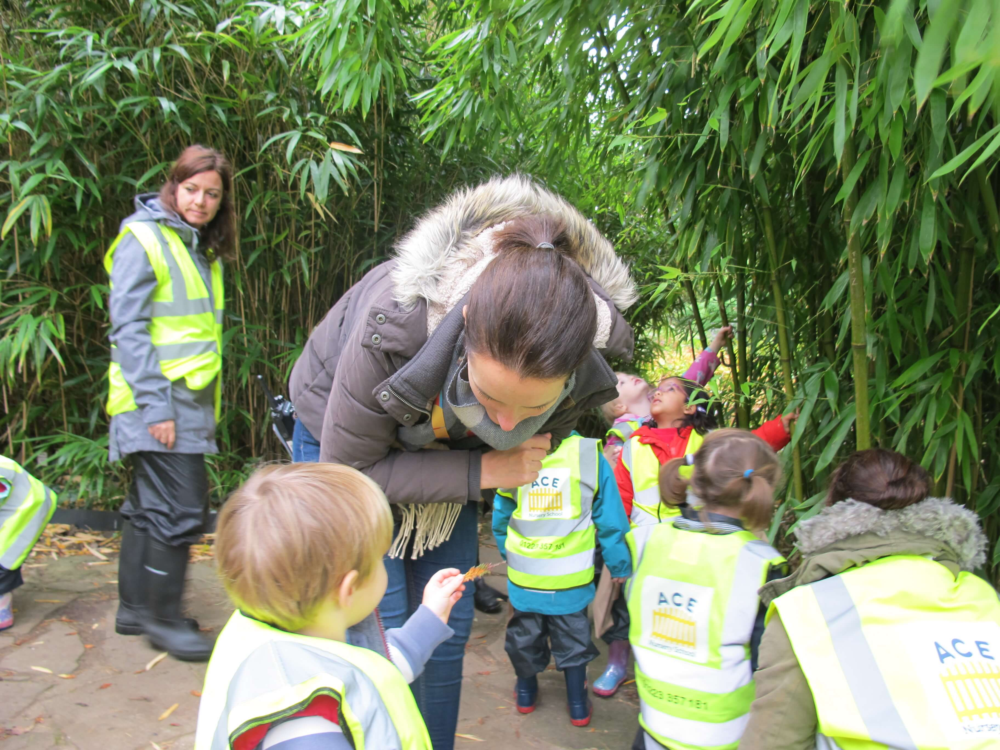
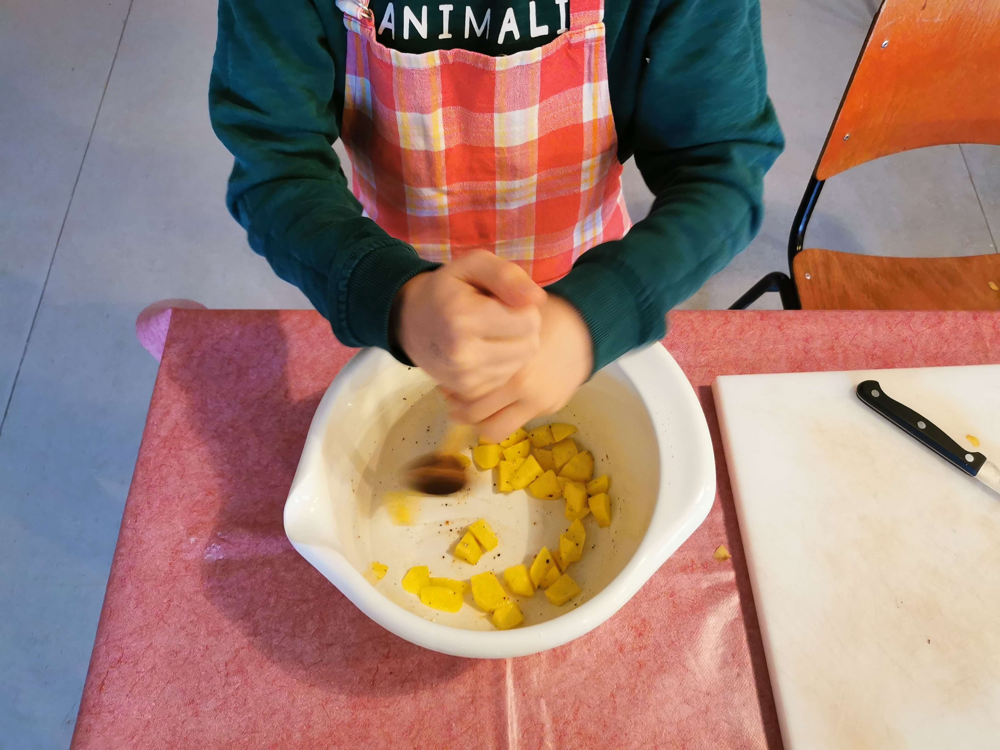
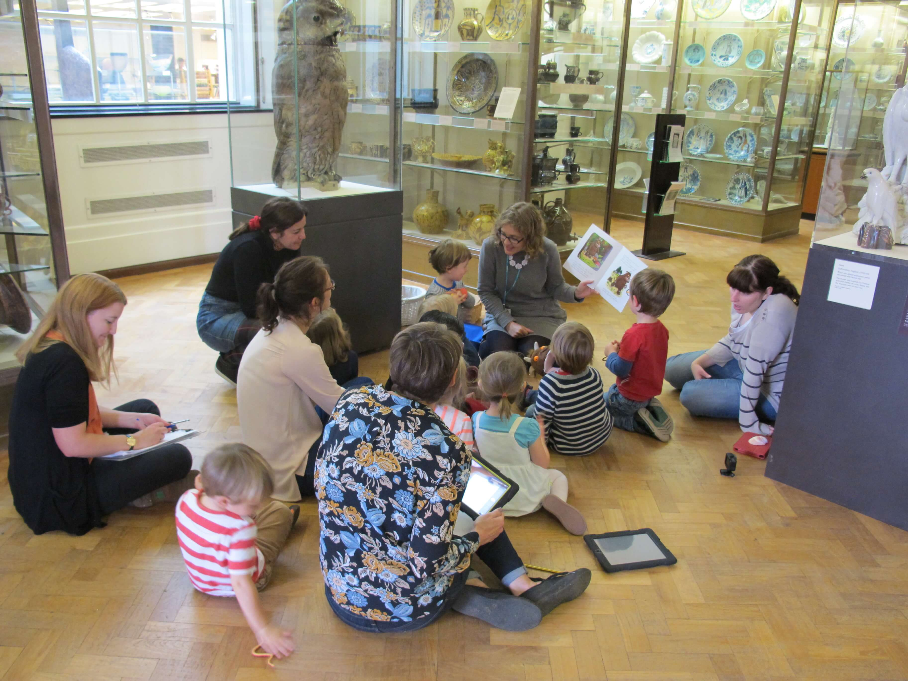
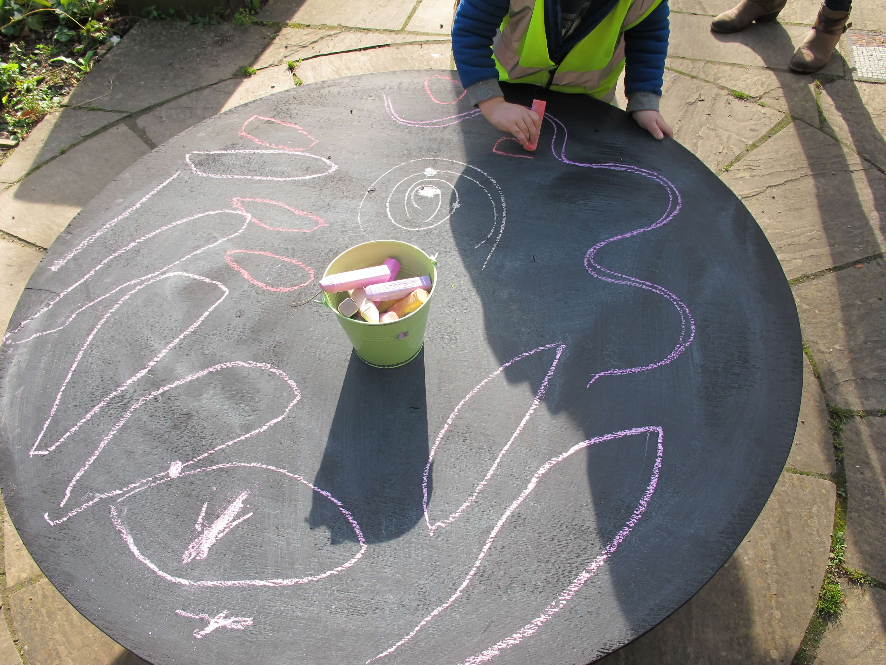
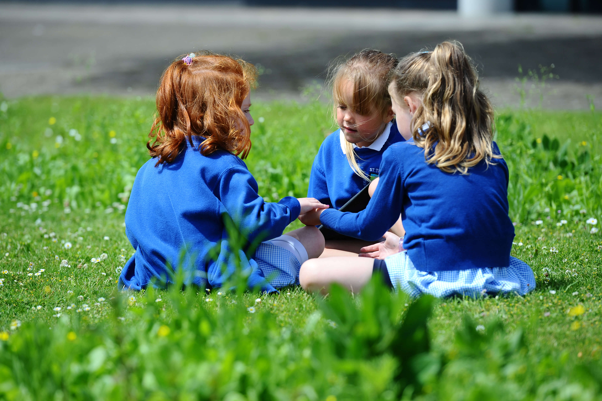
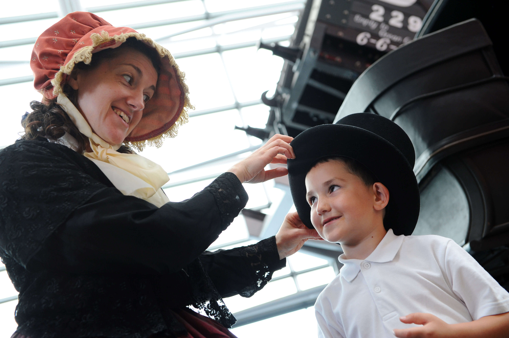

Transforming Education,
Country by Country
Our projects represent a global movement of "museum-schools" — long term residencies that turn cultural institutions into full-time learning environments for primary students.

England
England has hosted some of our most ambitious projects, including our longest full-time residency to date: a three-month placement for a Year 5 class.
Our work in England has spanned the widest age range, from nursery and pre-school children, to 10-year olds.
Projects have taken place in settings ranging from regional museums such as Arbeia in Tyne & Wear to nationally renowned institutions including Tate Liverpool and the Fitzwilliam Museum, alongside the Botanic Gardens in Cambridge.
Through these partnerships, we aim to help bridge socio-economic gaps by giving children access to cultural and scientific experiences they might not otherwise have.
View gallery →
Germany
In partnership with the Open-Air Museum at Kiekeberg, just south of Hamburg, this project supports children aged 7–10 with complex learning needs and social behavioural challenges — known as SEND students in the UK.
Through hands-on learning that engages “hand, heart and head”, pupils explore food and nutrition, agriculture, natural science and regional history. Direct interaction with these subjects encourages curiosity, creativity and concentration, while helping children feel more connected to their community.
The programme has now been running for five years and continues to deliver strong outcomes. Many participating children have shown increased confidence, improved social participation and, in some cases, have returned to their regular classes.
In 2025, the museum hosted an international conference to examine the project and its potential for wider application.
View gallery →
Norway
Our projects in Norway have focused on the city of Bergen and children of pre-school age.
Working with the city’s education department, museums and university, the programme uses local art, culture and nature to create a rich setting for play and learning. The project also serves to welcome young children as new citizens of Bergen.
Activities take place across key cultural sites, including the Cultural History Museum, the neighbouring botanical garden and the historic Bryggen wharf, home to the remains of the medieval town hall. Through storytelling, role play and creative exploration, children engage with social history, nature studies, drawing and even introductory science
These experiences help children develop a sense of belonging and an early understanding that the culture and heritage of their city are part of their own home place.
View gallery →
Republic of Ireland
Our projects in the Republic of Ireland, in Dublin and near Cork, have been especially creative in their approach
At the National Gallery in Dublin, two classes from a specialist primary school for children with dyslexia took part in a residency programme. Using the gallery’s collections as inspiration, pupils explored art, English, mathematics, geography, science and history. The project culminated in the students curating their own “Open Studio” exhibition, which was seen by more than 2,000 visitors.
At Lismore, just north of Cork, the castle worked with a creative cluster of five local primary schools. Children produced dynamic installations and displays inspired by both art and the natural environment they experienced during their time there.
Both programmes broadened access to the curriculum and supported more inclusive approaches to learning.
View gallery →
Scotland
In Scotland, the V&A Dundee has led the way with an MPSM programme called Schoolseum, designed to inspire 9–10 year-olds from disadvantaged areas of the city by introducing them to potential creative careers.
Pupils could choose to explore jewellery and fashion design, architecture and engineering, game design, or curation and exhibition design. Using the collections of Scotland’s design museum and the surrounding city as inspiration, they experimented with materials and design techniques to develop ideas and prototypes.
Students shared their work through storytelling, displays and presentations to audiences, bringing their creative process to life.
Launched in 2025, the programme proved so successful that the V&A has continued it as one of its most popular public programmes.
View gallery →
Wales
MPSM projects in Wales have been running for over ten years and are now firmly embedded in the culture of local schools. The programme works in partnership with the National Waterfront Museum and the teacher training college at Trinity St David’s, all based in Swansea.
St Thomas’s Community School first took part in 2016, sending two reception classes to the museum for five weeks each — the first time lessons had taken place outside the classroom.
Teachers quickly noted improvements in children’s language skills, self-confidence and social engagement.
With interpretation provided bilingually, the museum supports the development of both Welsh and English. Storytelling across the curriculum comes to life in a setting rich with science, engineering, social history, poetry and art.
View gallery →Want to bring MPSM to your museum or school?
We provide the framework, research and support needed to launch successful museum-school residencies anywhere in the world.
Contact us View toolkit